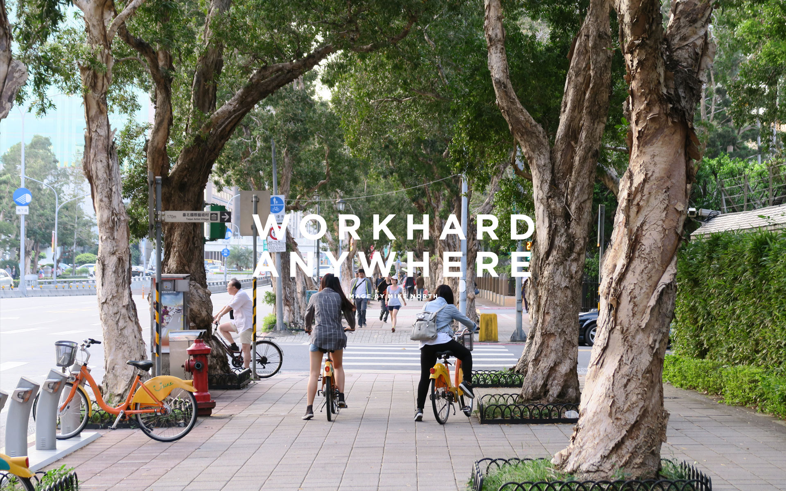
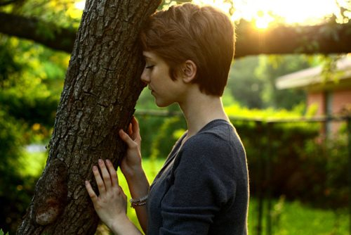

Throughout human history, most people live and die in the social class into which they were born. If they were born poor, chances are they will die poor. One way societies can help people rise in social class is to initiate new enterprises, like improved educational opportunities or technological advancements. When this happens, the need for workers in higher-class jobs motivates and enables people to move up in social class, which can help them to escape poverty.
When I was in college, I started dating my roommate, who was also a girl. I never considered myself to be gay or even bisexual, so it was very different for me. I come from a very conservative, religious family, so I was constantly in denial of my feelings. My girlfriend was very patient. When I finally told my mom about our relationship, she helped me through it. Obviously, there was a lot of backlash, and my parents all but disowned me. I felt like I was the butt of every joke. I had always been the golden child with straight A’s, and suddenly I was the black sheep of my family just because of who I was dating. I couldn’t understand how my parents could suddenly stop loving me.

Because you're a girl Ever since I was little, I always had to wash the dishes. If I didn’t, then I would be grounded. I have three brothers who did nothing after dinner, so when I was 14 I asked my dad why I always had to wash the dishes. His only answer was, “Because you’re a girl.” I was pissed off and we got into a fight because he never made my brothers do anything around the house. My brothers and parents expect me to have a bunch of kids and become a housewife, but ever since that day I decided to start doing things for myself and myself only.
Susie passed away yesterday evening. She came into my life quite unexpectedly five years ago. I was photographing in Brooklyn one evening when I saw the coolest little dog sitting on a stoop. I sat down to pet her, and after a few minutes, her owner told me that he was unable to care for her anymore. He asked if I could take her. I was broke at the time. I was sleeping on a friend’s couch. And everyone that I asked told me that it was ‘not the right time’ for a dog. But I was so charmed by Susie, and the whole encounter seemed so fated, that I offered to take her.
It was one of the best decisions I ever made. Susie was twelve years old at the time and didn’t need much. I’d never had a dog before. It was a new experience. I was introduced for the first time to a dog’s unexplainable and unconditional love. After a few weeks, it seemed that Susie’s only concern in life was staying as close to me as possible. There was now a joyous reunion waiting for me at the end of every workday. And I learned that there are few greater blessings than a wildly happy dog greeting you at the door.
I stayed in a bad relationship for three years. I was sharing a man with someone else. He wouldn’t answer his phone at certain times of the night. Or he was always working late. It was three years of letting him feel good at my expense. Three years of feeling ‘less than.’ I kept telling myself that I could be a better girlfriend. Or that I could fix it. Or that I should give it more time. I was down to 108 pounds from all the stress. I was constantly clenching my phone. I was always angry and arguing and serious. Finally one night the other woman got a hold of his phone, and she called me, and started asking me all these questions. And I decided that I couldn’t live like that anymore. I walked away. That was a year ago. My spirit feels so much lighter now. I’ve gained back twenty pounds. And I’m laughing again. During those years, it took a joke to make me laugh. Now I can laugh at anything.
I tried to warn her about her last boyfriend, but she didn’t want to listen. Once I overheard him telling her that she needed to respect him. I knew that was bad news. Then he left his home because he got in an argument with his family. I told her: ‘If he’ll do that to his family, he’ll do it to you too.’ But she didn’t listen. She stopped talking to me for a long time. Then sure enough, he took off and left her. She came back and thanked me. Go on, tell them. Mother was right.